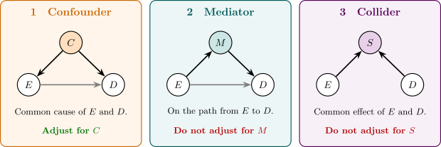

7.5 Causal diagrams
The definition of a confounder in terms of associations can mislead, and a picture of the causal structure is often clearer. In a causal diagram (directed acyclic graph) each variable is a node and an arrow \(A \to B\) means that \(A\) directly affects \(B\). Figure 2 shows the three basic structures in which a third variable is related to both exposure and disease.

A path between \(E\) and \(D\) is a sequence of arrows, in any direction, connecting them. A path that begins with an arrow into \(E\), such as \(E \leftarrow C \to D\), is a back-door path; it carries association that is not causal. A path is blocked if it passes through a variable that has been adjusted for, unless that variable is a collider (two arrowheads meeting, as at \(S\) in panel 3), in which case the path is blocked when the collider is not adjusted for and opened when it is. The working rule, the back-door criterion, is that adjusting for a set of variables removes confounding if the set contains no descendants of \(E\) and blocks every back-door path from \(E\) to \(D\).
The collider structure explains selection bias in a unified way. Restricting a study to hospital patients conditions on admission \(S\). If admission is affected by both the exposure and the disease, conditioning on it opens the path \(E \to S \leftarrow D\), and exposure and disease become associated among the patients whether or not they are associated in the population. Berkson’s bias is this, and so is the bias from differential participation of Theorem 7.2.1.
Questions on this section
Stuck on something here? Ask below and it stays attached to this topic.